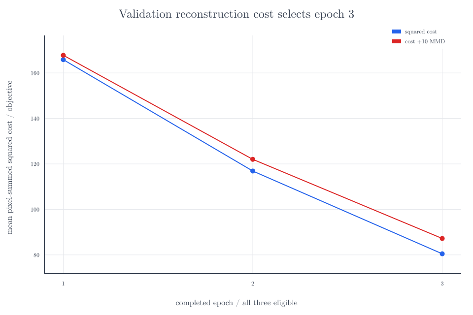
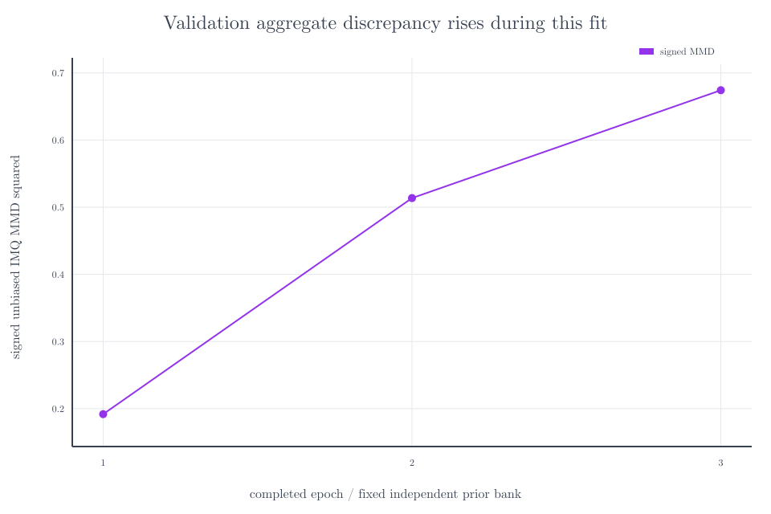
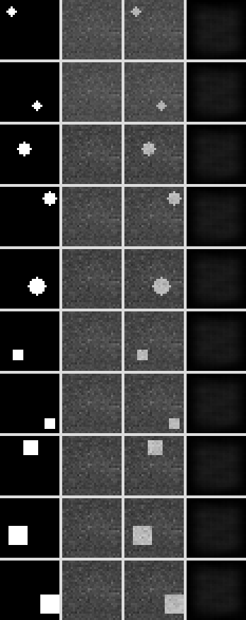
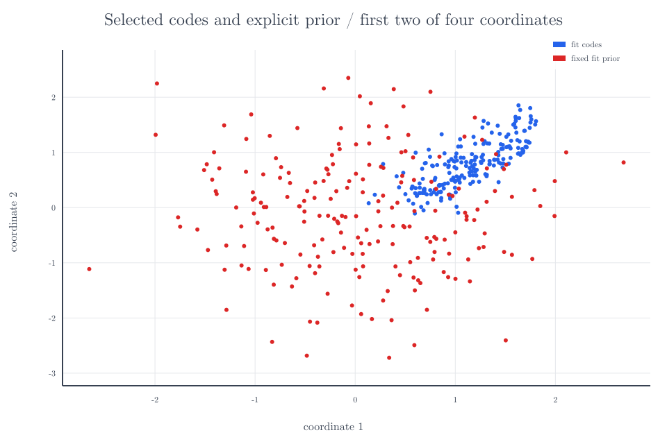

Wasserstein Autoencoder: Deterministic Codes and Aggregate MMD
Abstract
A deterministic encoder can be regularized by comparing a batch of codes with an independent prior sample. This report fits a compact WAE-MMD on 210 binary shapes, with separate pools of 42 validation and 42 test images. All 21 Adam steps, Gaussian banks and checkpoint criteria remain visible in C++. Epoch 3 minimizes validation reconstruction cost. Test MSE 0.103036 is worse than the fitting-only mean's 0.048548; validation MMD rises during fitting. The unfiltered reconstructions and prior outputs remain visible alongside these limitations.
Reconstruction and aggregate matching take different paths
[Tolstikhin, Bousquet, Gelly and Schölkopf (2018)](https://arxiv.org/abs/1711.01558) express transport through a latent encoder constrained to reproduce the prior marginal, then relax that constraint with a discrepancy penalty. WAE-MMD compares aggregate encoded data with prior samples, rather than applying a Gaussian KL to each input. This report uses a deterministic encoder and fixed averaged IMQ kernels in a small teaching architecture.
#include <dm/dm.hpp>
int main() {
std::filesystem::create_directories("build");
dm::graphics::Diagram d(51, 1100);
dm::graphics::DiagramNodeStyle st;
st.width = 5.4;
st.height = 2.6;
st.font_size = 19;
d.node("x", {0, 0}, "Image pixels\n784 values", st)
.node("e", {7, 0}, "Tanh encoder 16\nLinear code 4", st)
.node("z", {14, 0}, "Deterministic codes\nOne row per image", st)
.node("g", {21, 0}, "Tanh decoder 16\nLinear 784 / sigmoid", st)
.node("r", {28, 0}, "Squared pixel sums\nMean over images", st)
.node("p", {14, -6}, "Explicit prior sample\nIndependent N(0,I)", st)
.node("m", {21, -6}, "Signed unbiased MMD\nIMQ scales 1,4,16", st)
.node("l", {28, -6}, "Objective\nReconstruction +10 MMD", st)
.edge("x", "e")
.edge("e", "z")
.edge("z", "g")
.edge("g", "r")
.edge("z", "m")
.edge("p", "m")
.edge("m", "l")
.edge("r", "l");
dm::graphics::DiagramStroke target;
target.arrow = true;
target.color = {100, 116, 139};
d.path({{0, 1.3}, {0, 3.5}, {28, 3.5}, {28, 1.3}}, target)
.text({14, 4.2}, "Original image target / squared reconstruction cost", 19);
d.text(
{14, -11},
"Prior rows enter only the aggregate regularizer.\nCodes and reconstructions do not depend "
"on those draws.\nThe caller owns Gaussian banks, batches, reverse mode and Adam.",
20)
.save_svg("build/wae_method.svg");
}
Writing z=E(x), reconstruction r=G(z) and independent prior rows u, the actual objective is
Both sample counts must be at least two, but may differ. The unbiased finite-sample estimate can be negative; no square root or clipping is applied. Its unbiasedness assumes independent samples. Self-comparing one finite array is a useful algebraic control, not an independent two-sample experiment. The sigmoid supplies bounded decoder values; it does not turn squared-error fitting into a Bernoulli likelihood. There is no posterior noise, local KL, discriminator or image-density estimate.
A two-by-three example exposes every normalization
Take z=[0,1] and u=[0,2,3]. Self-kernels have unit diagonals, so the within-z sum drops two entries and divides by two; the within-u sum drops three and divides by six. The cross matrix keeps all six entries, including the matching zero pair. All matrices and scalar terms below come from the native API.
#include <dm/dm.hpp>
int main() {
namespace n = dm::nn;
const auto t = n::DType::Float64;
const auto z = n::tensor({0., 1.}, {2, 1}, t), u = n::tensor({0., 2., 3.}, {3, 1}, t);
const auto m = n::models::ImqMmd(z, u);
std::print(
"| term | value |\n|---|---:|\n| within z | {:.9f} |\n| within u | {:.9f} |\n| cross mean | "
"{:.9f} |\n| signed MMD squared | {:.9f} |\n| same-array z control | {:.9f} |\n",
m.within_x.item(),
m.within_y.item(),
m.cross.item(),
m.value.item(),
n::models::ImqMmd(z, z).value.item());
dm::graphics::Diagram d(41, 1100);
dm::graphics::DiagramNodeStyle st;
st.width = 2.8;
st.height = 1.6;
st.font_size = 17;
auto excluded = st;
excluded.fill = dm::RGB{254, 226, 226};
auto kept = st;
kept.fill = dm::RGB{219, 234, 254};
d.text({1.6, 4}, "Within z / exclude diagonal", 21);
for (int i = 0; i < 2; ++i)
for (int j = 0; j < 2; ++j)
d.node(
"zz" + std::to_string(i * 2 + j),
{3.3 * j, 1.8 - 2 * i},
i == j ? "Excluded self" : std::format("{:.6f}", m.xx.at({i, j})),
i == j ? excluded : kept);
d.text({13, 4}, "Cross z,u / keep all six", 21);
for (int i = 0; i < 2; ++i)
for (int j = 0; j < 3; ++j)
d.node(
"zu" + std::to_string(i * 3 + j),
{9.7 + 3.3 * j, 1.8 - 2 * i},
std::format("{:.6f}", m.xy.at({i, j})),
kept);
d.text(
{8, -5},
"Within z divides by 2; within u divides by 6; cross mean divides by 6.\nUnit self-kernels "
"are omitted only from the two within-sample sums.",
20)
.save_svg("build/wae_kernel_pairs.svg");
}| term | value |
|---|---|
| within z | 0.747058824 |
| within u | 0.532096531 |
| cross mean | 0.640558069 |
| signed MMD squared | -0.001960784 |
| same-array z control | -0.252941176 |

For squared pixel cost, four target zeros against four decoder values of 0.5 contribute 4×0.25=1 per image. Averaging two such images gives 1. Adding weight 10 times MMD −0.1 gives objective 0. This arithmetic separates the image mean from the pixel sum; dividing by 784 would change its balance against the fixed MMD coefficient.
Native data preparation and an explicit fitting loop
The native beta-vae-assets task produces the same complete local lattice as the related WAE source: 294 binary 28×28 circle/square images. Radius=size+2, centre=(3x+5,3y+5), circles use inclusive Euclidean radius and squares inclusive Chebyshev radius. Residue (x+2y+size+3shape) mod 7 assigns test 0, validation 1 and fitting 2–6. All source IDs, factor coordinates and pixels are checked against KnownFactorLattice. Factors are provenance only; there is no external benchmark or download in this experiment.
#include <dm/dm.hpp>
int main() {
namespace n = dm::nn;
const auto cache = dm::datasets::prepare_example_data("beta-vae-assets");
const auto a = n::load_npz((std::filesystem::path(cache) / "beta_vae/factors.npz").string());
auto find = [&](const std::string& name) {
for (const auto& [key, value] : a)
if (key == name)
return value;
throw std::runtime_error(name);
};
std::print("| pool | images | pixel width | explicit prior width |\n|---|---:|---:|---:|\n");
for (const std::string split : {"fit", "validation", "test"})
std::print("| {} | {} | 784 | 4 |\n", split, find(split + "_images").size(0));
}| pool | images | pixel width | explicit prior width |
|---|---|---|---|
| fit | 210 | 784 | 4 |
| validation | 42 | 784 | 4 |
| test | 42 | 784 | 4 |
Seed 3701 initializes eight leaves/26,036 scalars in encoder/W,b; code/W,b; decoder/W,b; output/W,b order. The widths are 784→16 tanh→4 and 4→16 tanh→784 sigmoid. Ordinary Glorot weights and zero biases are used. Encoder/code contain 12,628 scalars; decoder/output 13,408. BatchOrder(210,32,3761) supplies seven batches per epoch, including an 18-row final batch. Three epochs make 21 Adam steps with rate 0.003, moments 0.9/0.999 and epsilon 1e-8.
All Gaussian banks are explicit. A fresh local MT19937/Box–Muller stream supplies Float64 standard values, then their Float32 casts. Seeds 3719/3725/3731 fix fit/validation/test prior banks; seed 3749 supplies twenty generation codes. Epoch e uses a separate 210-row bank with seed 3779+e; the same row indices select image and prior rows. No image-dependent posterior noise is drawn. A changed prior can alter MMD and gradients without changing a forward reconstruction at fixed parameters.
Every completed epoch 1–3 is eligible. *Validation squared reconstruction cost alone* selects the checkpoint, excluding MMD. A fresh model restores all eight leaves; this is model restore, not optimizer-state resume. The complete source preserves all first-step artifacts, three epoch snapshots, both Gaussian dtypes, batch history and selected outputs. The actual forward, objective, reverse mode and Adam step remain visible inside the loop.
#include <dm/dm.hpp>
namespace nn = dm::nn;
namespace ae {
void Require(bool ok, const std::string& why) {
if (!ok)
throw std::runtime_error(why);
}
void Near(double a, double b, double tol, const std::string& why) {
Require(std::abs(a - b) <= tol, why);
}
nn::Tensor Find(const nn::NamedTensors& a, const std::string& name) {
for (const auto& [key, value] : a)
if (key == name)
return value;
throw std::runtime_error(name);
}
struct BetaFactorData {
nn::Tensor images, factors, source;
};
std::vector<BetaFactorData> LoadBetaFactors(const std::filesystem::path& root) {
const auto arrays = nn::load_npz((root / "factors.npz").string()),
known = nn::models::KnownFactorLattice();
std::vector<BetaFactorData> result;
std::set<int> seen;
for (const std::string split : {"fit", "validation", "test"}) {
const int n = split == "fit" ? 210 : 42;
const auto raw = Find(arrays, split + "_images"), f = Find(arrays, split + "_factors"),
ids = Find(arrays, split + "_source_ids");
Require(
raw.shape() == nn::Shape{n, 28, 28, 1} && f.shape() == nn::Shape{n, 4} &&
f.dtype() == nn::DType::Int32 && ids.shape() == nn::Shape{n} &&
ids.dtype() == nn::DType::Int32,
"complete lattice schema");
const auto canonical_ids = Find(known, split + "_source_ids").to_vector<int>();
std::vector<std::int64_t> rows;
for (int id : ids.to_vector<int>()) {
auto where = std::find(canonical_ids.begin(), canonical_ids.end(), id);
Require(
where != canonical_ids.end() && seen.insert(id).second,
"unique identity in correct split");
rows.push_back(where - canonical_ids.begin());
}
const auto x = nn::take_rows(Find(known, split + "_images"), rows);
Require(
nn::equal_bits(nn::cast(raw, nn::DType::Float32), x) &&
nn::equal_bits(f, nn::take_rows(Find(known, split + "_factors"), rows)),
"all factor coordinates and binary pixels match the core lattice");
result.push_back({x, f, ids});
}
Require(seen.size() == 294, "exhaustive lattice");
return result;
}
void SaveFactorData(const std::filesystem::path& root, const std::vector<BetaFactorData>& pools) {
nn::NamedTensors arrays;
for (int k = 0; k < 3; ++k) {
const std::string s = k == 0 ? "fit" : k == 1 ? "validation" : "test";
arrays.emplace_back(s + "_images", pools[k].images);
arrays.emplace_back(s + "_factors", pools[k].factors);
arrays.emplace_back(s + "_source_ids", pools[k].source);
}
nn::save_npz((root / "data.npz").string(), arrays);
}
nn::NamedTensors Arrays(const nn::ParameterStore& p) {
nn::NamedTensors a;
for (const auto& name : p.names())
a.emplace_back(name, p.at(name).detach().clone());
return a;
}
auto Snapshot(const nn::ParameterStore& p) {
return p.flatten();
}
double Mse(const nn::Tensor& a, const nn::Tensor& b) {
return nn::mean(
nn::square(
nn::cast(a.reshape({a.size(0), 784}), nn::DType::Float64) -
nn::cast(b.reshape({b.size(0), 784}), nn::DType::Float64)))
.item();
}
nn::Tensor PixelMean(const nn::Tensor& x) {
return nn::cast(
nn::mean(nn::cast(x.reshape({x.size(0), 784}), nn::DType::Float64), {0}), nn::DType::Float32);
}
nn::Tensor Constant(const nn::Tensor& row, int n) {
return nn::broadcast_to(row.reshape({1, 784}), {n, 784}).contiguous();
}
nn::Tensor Flatten(const nn::Tensor& x) {
return x.reshape({x.size(0), 784});
}
struct VaeNoiseBank {
nn::Tensor standard, epsilon;
};
VaeNoiseBank BetaVaeNoise(std::int64_t n, std::int64_t samples, std::uint32_t seed) {
const auto standard = nn::models::GaussianNoise({n, 4}, samples, seed);
return {standard, nn::cast(standard, nn::DType::Float32)};
}
nn::Tensor BetaVaeNoiseAt(const VaeNoiseBank& bank, std::int64_t k) {
return nn::select(bank.epsilon, 0, k).contiguous();
}
using nn::models::ImqMmd;
void Warm(nn::ParameterStore& p) {
nn::NoGradGuard guard;
nn::models::WassersteinAutoencoder(p, nn::zeros({2, 784}), nn::zeros({2, 4}));
}
nn::NamedTensors
Evaluate(nn::ParameterStore& p, const nn::Tensor& images, const nn::Tensor& prior) {
nn::NoGradGuard guard;
const auto n = nn::models::WassersteinAutoencoder(p, Flatten(images), prior);
nn::NamedTensors out{
{"code", n.code},
{"logits", n.logits},
{"probability", n.probability},
{"squared_cost", n.squared_cost},
{"reconstruction_loss", n.reconstruction_loss},
{"mmd_xx", n.mmd.xx},
{"mmd_yy", n.mmd.yy},
{"mmd_xy", n.mmd.xy},
{"mmd_within_x", n.mmd.within_x},
{"mmd_within_y", n.mmd.within_y},
{"mmd_cross", n.mmd.cross},
{"mmd", n.mmd.value},
{"loss", n.loss}};
for (auto& [name, t] : out) {
t = t.contiguous();
for (double v : t.to_vector<double>())
Require(std::isfinite(v), "all WAE endpoints finite");
}
return out;
}
nn::Tensor Decode(nn::ParameterStore& p, const nn::Tensor& code) {
nn::NoGradGuard guard;
return nn::sigmoid(nn::models::WaeDecode(p, code)).contiguous();
}
nn::NamedTensors CheckGradients(
const nn::ParameterStore& p,
const std::vector<nn::Tensor>& g,
const std::string& finite,
const std::string& nonzero) {
Require(g.size() == p.size(), "all eight derivative leaves");
nn::NamedTensors out;
const auto names = p.names();
for (std::size_t k = 0; k < g.size(); ++k) {
double norm = 0;
for (double x : g[k].to_vector<double>()) {
Require(std::isfinite(x), finite);
norm += x * x;
}
Require(norm > 0, nonzero);
out.emplace_back(names[k], g[k]);
}
return out;
}
} // namespace ae
namespace check {
using ae::Near;
using ae::Require;
} // namespace check
namespace {
namespace nn = datamunge::nn;
double Difference(const nn::Tensor& a, const nn::Tensor& b) {
check::Require(a.shape() == b.shape(), "matching outputs");
const auto x = a.contiguous().to_vector<float>(), y = b.contiguous().to_vector<float>();
double d = 0;
for (size_t i = 0; i < x.size(); ++i)
d = std::max(d, std::abs(double(x[i]) - y[i]));
return d;
}
float Scalar(const nn::NamedTensors& f, const std::string& name) {
return ae::Find(f, name).item<float>();
}
void Algebra(const std::filesystem::path& root) {
std::vector<float> a(12), b(16);
for (int i = 0; i < 12; ++i)
a[i] = .2f * (i - 5);
for (int i = 0; i < 16; ++i)
b[i] = .15f * ((i * 7) % 17 - 8);
auto x = nn::from_vector(a, {3, 4}).requires_grad_(),
y = nn::from_vector(b, {4, 4}).requires_grad_();
auto m = ae::ImqMmd(x, y);
auto g = nn::grad(m.value, {x, y});
nn::NoGradGuard guard;
auto same = ae::ImqMmd(x, x), zero = ae::ImqMmd(nn::zeros({3, 4}), nn::zeros({4, 4}));
check::Near(zero.value.item<float>(), 0, 0, "all-identical latent kernel yields exactzero MMD");
check::Require(
same.value.item<float>() < 0,
"same finite empirical sample unbiased estimator CAN be negative,do not clip");
const auto gx = g[0].to_vector<float>(), gy = g[1].to_vector<float>();
for (int j = 0; j < 4; ++j) {
double sum = 0;
for (int i = 0; i < 3; ++i)
sum += gx[i * 4 + j];
for (int i = 0; i < 4; ++i)
sum += gy[i * 4 + j];
check::Near(sum, 0, 1e-6, "joint translation invariance gradient");
}
nn::save_npz(
(root / "mmd_algebra.npz").string(),
{{"x", x.detach()},
{"y", y.detach()},
{"xx", m.xx.detach()},
{"yy", m.yy.detach()},
{"xy", m.xy.detach()},
{"mmd", m.value.detach()},
{"gradient_x", g[0]},
{"gradient_y", g[1]},
{"same_sample_unbiased_mmd", same.value},
{"all_identical_mmd", zero.value}});
}
void Run(
const std::filesystem::path& data,
const std::filesystem::path& root,
int epochs,
const std::string& init) {
auto pools = ae::LoadBetaFactors(data);
std::filesystem::create_directories(root);
Algebra(root);
std::vector<ae::VaeNoiseBank> priors;
nn::NamedTensors bank;
for (int k = 0; k < 3; ++k) {
const std::string split = k == 0 ? "fit" : k == 1 ? "validation" : "test";
priors.push_back(ae::BetaVaeNoise(pools[k].images.size(0), 1, 3719 + k * 6));
bank.emplace_back(split + "_standard", priors[k].standard);
bank.emplace_back(split + "_epsilon", priors[k].epsilon);
}
auto generation = ae::BetaVaeNoise(20, 1, 3749);
bank.emplace_back("generation_standard", generation.standard);
bank.emplace_back("generation_epsilon", generation.epsilon);
ae::SaveFactorData(root, pools);
nn::save_npz((root / "fixed_noise.npz").string(), bank);
nn::ParameterStore model(3701);
ae::Warm(model);
nn::OptimizerConfig config;
config.kind = nn::OptimizerKind::Adam;
nn::Optimizer optimizer(model, .003, config);
if (!init.empty())
model.load(init);
check::Require(model.count() == 26036 && model.size() == 8, "compact deterministic WAE census");
nn::save_npz((root / "initial_arrays.npz").string(), ae::Arrays(model));
nn::BatchOrder order(210, 32, 3761);
std::ofstream history(root / "history.tsv"), batches(root / "batches.tsv");
history.precision(17);
history << "epoch\tvalidation_squared_cost\tvalidation_mmd\tvalidation_objective\n";
batches << "epoch\tstep\trow\tsource_id\n";
const auto fit_source = pools[0].source.to_vector<int>();
const auto best_path = (root / "best.npz").string();
double best = std::numeric_limits<double>::infinity();
int selected = 0, steps = 0;
const auto started = std::chrono::steady_clock::now();
for (int epoch = 1; epoch <= epochs; ++epoch) {
auto noise = ae::BetaVaeNoise(210, 1, 3779 + epoch);
nn::save_npz(
(root / ("train_noise_epoch" + std::to_string(epoch) + ".npz")).string(),
{{"standard", noise.standard}, {"epsilon", noise.epsilon}});
auto prior = ae::BetaVaeNoiseAt(noise, 0);
order.begin_epoch();
int seen = 0;
for (;;) {
auto rows = order.next();
if (rows.empty())
break;
auto x = nn::take_rows(pools[0].images, rows), p = nn::take_rows(prior, rows);
if (steps == 0) {
nn::save_npz((root / "first_batch.npz").string(), {{"images", x}, {"prior", p}});
nn::save_npz((root / "first_forward.npz").string(), ae::Evaluate(model, x, p));
nn::save_npz(
(root / "first_gradients.npz").string(),
ae::CheckGradients(
model,
nn::grad(
nn::models::WassersteinAutoencoder(model, ae::Flatten(x), p).loss,
model.parameters()),
"all WAE derivatives finite",
"all8tensors receive WAE gradients"));
}
const auto forward = nn::models::WassersteinAutoencoder(model, ae::Flatten(x), p);
check::Require(std::isfinite(forward.loss.item<float>()), "finite signed WAE objective");
const auto gradients = nn::grad(forward.loss, model.parameters());
optimizer.step(gradients);
if (steps == 0)
nn::save_npz((root / "first_update_arrays.npz").string(), ae::Arrays(model));
for (auto row : rows)
batches << epoch << '\t' << steps << '\t' << row << '\t' << fit_source[row] << '\n';
++steps;
seen += int(rows.size());
}
check::Require(seen == 210, "all fit images once per epoch");
auto v = ae::Evaluate(model, pools[1].images, ae::BetaVaeNoiseAt(priors[1], 0));
const double score = Scalar(v, "reconstruction_loss");
history << epoch << '\t' << score << '\t' << Scalar(v, "mmd") << '\t' << Scalar(v, "loss")
<< '\n';
nn::save_npz(
(root / ("epoch" + std::to_string(epoch) + "_arrays.npz")).string(), ae::Arrays(model));
if (score < best) {
best = score;
selected = epoch;
model.save(best_path); // validation squared transport cost selects WAE
}
std::cout << "epoch" << epoch << ":validation squaredcost=" << score
<< ",MMD=" << Scalar(v, "mmd") << ",objective=" << Scalar(v, "loss") << std::endl;
}
const double seconds =
std::chrono::duration<double>(std::chrono::steady_clock::now() - started).count();
nn::ParameterStore deployed(3701);
ae::Warm(deployed);
deployed.load(best_path); // fresh WAE model-only restore
check::Near(
Scalar(
ae::Evaluate(deployed, pools[1].images, ae::BetaVaeNoiseAt(priors[1], 0)),
"reconstruction_loss"),
best,
1e-8,
"restored validation cost");
const auto before = ae::Snapshot(deployed);
nn::NamedTensors outputs;
for (int k = 0; k < 3; ++k) {
const std::string split = k == 0 ? "fit" : k == 1 ? "validation" : "test";
for (const auto& [key, value] :
ae::Evaluate(deployed, pools[k].images, ae::BetaVaeNoiseAt(priors[k], 0)))
outputs.emplace_back(split + "_" + key, value);
}
auto p = ae::BetaVaeNoiseAt(priors[2], 0);
auto test = ae::Evaluate(deployed, pools[2].images, p),
repeat = ae::Evaluate(deployed, pools[2].images, p),
other = ae::Evaluate(
deployed, pools[2].images, ae::BetaVaeNoiseAt(ae::BetaVaeNoise(42, 1, 3793), 0));
const auto probability = ae::Find(test, "probability");
check::Require(
nn::equal_bits(probability, ae::Find(repeat, "probability")) &&
nn::equal_bits(probability, ae::Decode(deployed, ae::Find(test, "code"))),
"repeat/code-only decoder BITEXACT");
check::Require(
nn::equal_bits(ae::Find(test, "code"), ae::Find(other, "code")) &&
!nn::equal_bits(ae::Find(test, "mmd"), ae::Find(other, "mmd")),
"prior changes aggregate regularizer,not deterministic encoding");
auto small =
ae::Evaluate(deployed, nn::take_rows(pools[2].images, {0, 1}), nn::take_rows(p, {0, 1, 2}));
const double parity =
Difference(ae::Find(small, "probability"), nn::take_rows(probability, {0, 1}));
check::Require(parity < 2e-6, "reconstruction small/batch parity with UNEQUAL prior count");
bool rejected = false;
try {
ae::Evaluate(deployed, nn::take_rows(pools[2].images, {0}), p);
} catch (const std::exception&) {
rejected = true;
}
check::Require(rejected, "singleton unbiased MMD sample rejected before division");
auto prior_z = ae::BetaVaeNoiseAt(generation, 0), prior = ae::Decode(deployed, prior_z);
nn::save_npz((root / "prior.npz").string(), {{"z", prior_z}, {"probability", prior}});
nn::save_npz((root / "model_arrays.npz").string(), ae::Arrays(deployed));
nn::save_npz((root / "outputs.npz").string(), outputs);
check::Require(before == ae::Snapshot(deployed), "all WAE inference immutable");
auto mean = ae::Constant(ae::PixelMean(pools[0].images), 42);
const double mse = ae::Mse(probability, pools[2].images),
baseline = ae::Mse(mean, pools[2].images);
const double cost = Scalar(test, "reconstruction_loss"), mmd = Scalar(test, "mmd"),
objective = Scalar(test, "loss");
std::ofstream meta(root / "metrics.json");
meta.precision(17);
meta << "{\"parameters\":26036,\"tensors\":8,\"epochs\":" << epochs << ",\"updates\":" << steps
<< ",\"selected_epoch\":" << selected << ",\"mmd_weight\":10,\"test_squared_cost\":" << cost
<< ",\"test_mmd\":" << mmd << ",\"test_objective\":" << objective << ",\"test_mse\":" << mse
<< ",\"fit_mean_mse\":" << baseline << ",\"small_batch_max_error\":" << parity
<< ",\"training_seconds\":" << seconds << "}\n";
check::Require(bool(meta) && bool(history) && bool(batches), "complete WAE evidence");
std::print(
"| selected epoch | test squared pixel sum | signed MMD | penalized objective | test MSE | "
"fit-only mean MSE |\n|---:|---:|---:|---:|---:|---:|\n| {} | {:.9f} | {:.9f} | {:.9f} | "
"{:.9f} | {:.9f} |\n",
selected,
cost,
mmd,
objective,
mse,
baseline);
}
} // namespace
int main() {
try {
const std::filesystem::path cache = dm::datasets::data_home();
dm::datasets::prepare_example_data("beta-vae-assets", cache.string());
Run(cache / "beta_vae", "build/wae", 3, "");
return 0;
} catch (const std::exception& e) {
std::cerr << e.what() << '\n';
return 1;
}
}epoch1:validation squaredcost=165.828,MMD=0.191852,objective=167.746 epoch2:validation squaredcost=116.868,MMD=0.513604,objective=122.004 epoch3:validation squaredcost=80.4715,MMD=0.674194,objective=87.2135
| selected epoch | test squared pixel sum | signed MMD | penalized objective | test MSE | fit-only mean MSE |
|---|---|---|---|---|---|
| 3 | 80.780532837 | 0.689407468 | 87.674606323 | 0.103036401 | 0.048548290 |
All eighteen archives/1,147,656 values and TSV histories match the frozen original exactly. Only two summary MSE reductions use tensor Float64 accumulation instead of host summation; other non-timing JSON values remain exact. The optional NumPy oracle checks the saved Gaussian banks, every first derivative and the exact first Adam update independently.
Reconstruction improves while aggregate matching worsens
The next two plots use epoch-end validation measurements at the same three checkpoints. The selection score decreases, whereas the signed MMD rises. This reveals the tradeoff in this short run; it is not evidence that the prior and encoded distributions match. Neither curve uses held-out test records to select the model.
#include <dm/dm.hpp>
int main() {
std::ifstream input("build/wae/history.tsv");
std::string header;
std::getline(input, header);
std::vector<double> e, cost, objective;
double epoch, c, m, l;
while (input >> epoch >> c >> m >> l) {
e.push_back(epoch);
cost.push_back(c);
objective.push_back(l);
}
if (e.size() != 3)
return 1;
auto chart = dm::graphics::RPlot::create();
chart.lines(e, cost, "squared cost", dm::RGBA{37, 99, 235}, 2)
.points(e, cost, "", dm::RGBA{37, 99, 235}, 5)
.lines(e, objective, "cost +10 MMD", dm::RGBA{220, 38, 38}, 2)
.points(e, objective, "", dm::RGBA{220, 38, 38}, 5)
.title("Validation reconstruction cost selects epoch 3")
.x_label("completed epoch / all three eligible")
.y_label("mean pixel-summed squared cost / objective")
.x_ticks({1, 2, 3}, {"1", "2", "3"})
.save_svg("build/wae_validation_cost.svg");
}
#include <dm/dm.hpp>
int main() {
std::ifstream input("build/wae/history.tsv");
std::string header;
std::getline(input, header);
std::vector<double> e, mmd;
double epoch, c, m, l;
while (input >> epoch >> c >> m >> l) {
e.push_back(epoch);
mmd.push_back(m);
}
if (e.size() != 3)
return 1;
auto chart = dm::graphics::RPlot::create();
chart.lines(e, mmd, "signed MMD", dm::RGBA{147, 51, 234}, 2)
.points(e, mmd, "", dm::RGBA{147, 51, 234}, 5)
.title("Validation aggregate discrepancy rises during this fit")
.x_label("completed epoch / fixed independent prior bank")
.y_label("signed unbiased IMQ MMD squared")
.x_ticks({1, 2, 3}, {"1", "2", "3"})
.save_svg("build/wae_validation_mmd.svg");
}
Keep every held-out gallery row and the constant baseline
Each row below is target, reconstruction, absolute error and fitting-only mean. Ten test rows are evenly spaced in source order, without quality ranking; all panels use fixed 0–1 gray. Decoder values are not Bernoulli pixel draws. The fitting mean is computed only from 210 fitting images, and every test image receives the same baseline.
#include <dm/dm.hpp>
int main() {
namespace n = dm::nn;
const auto data = n::load_npz("build/wae/data.npz"), out = n::load_npz("build/wae/outputs.npz");
auto find = [](const n::NamedTensors& a, const std::string& name) {
for (const auto& [key, value] : a)
if (key == name)
return value;
throw std::runtime_error(name);
};
const auto x = find(data, "test_images").reshape({42, 784}), rec = find(out, "test_probability");
const auto mean = n::cast(
n::mean(n::cast(find(data, "fit_images").reshape({210, 784}), n::DType::Float64), {0}),
n::DType::Float32);
const std::vector<n::Tensor> columns{
x, rec, n::abs(x - rec), n::broadcast_to(mean.reshape({1, 784}), {42, 784})};
std::vector<n::Tensor> panels;
const auto ids = find(data, "test_source_ids").to_vector<int>();
std::print("Displayed source IDs:");
for (int k = 0; k < 10; ++k) {
const int row = k * 41 / 9;
std::print(" {}", ids[row]);
for (const auto& c : columns)
panels.push_back(n::take_rows(c, {row}));
}
std::print(".\n");
n::save_image_grid(
n::concat(panels, 0).reshape({40, 28, 28, 1}),
"build/wae_reconstructions.png",
4,
0,
1,
4,
220. / 255.,
3);
}Displayed source IDs: 0 33 65 91 130 159 195 217 256 292.

The next projection displays only the first two coordinates of the selected four-dimensional fit codes and the fixed fit prior bank. It does not select points, fit axes or use factor labels. Overlap in a two-coordinate view would not establish agreement of the full joint distributions. Axis ranges follow both complete plotted sets.
#include <dm/dm.hpp>
int main() {
namespace n = dm::nn;
const auto out = n::load_npz("build/wae/outputs.npz"),
banks = n::load_npz("build/wae/fixed_noise.npz");
auto find = [](const n::NamedTensors& a, const std::string& name) {
for (const auto& [key, value] : a)
if (key == name)
return value;
throw std::runtime_error(name);
};
const auto codes = find(out, "fit_code"), prior = n::select(find(banks, "fit_epsilon"), 0, 0);
auto chart = dm::graphics::RPlot::create();
for (int s = 0; s < 2; ++s) {
const auto a = s == 0 ? codes : prior;
std::vector<double> x, y;
for (int i = 0; i < a.size(0); ++i) {
x.push_back(a.at({i, 0}));
y.push_back(a.at({i, 1}));
}
chart.points(
x,
y,
s == 0 ? "fit codes" : "fixed fit prior",
s == 0 ? dm::RGBA{37, 99, 235} : dm::RGBA{220, 38, 38},
3);
}
chart.title("Selected codes and explicit prior / first two of four coordinates")
.x_label("coordinate 1")
.y_label("coordinate 2")
.save_svg("build/wae_latent_projection.svg");
}
Twenty target-free prior decodes
This program rebuilds the exact seed 3749 Gaussian bank, checks its Float32 codes against the saved prior archive, restores *only four decoder leaves*, and checks every output value. It creates neither an encoder nor targets. All twenty probability images appear in draw order, without rejection, resampling or quality selection.
#include <dm/dm.hpp>
int main() {
namespace n = dm::nn;
n::NoGradGuard guard;
const auto arrays = n::load_npz("build/wae/model_arrays.npz"),
saved = n::load_npz("build/wae/prior.npz");
auto find = [](const n::NamedTensors& a, const std::string& name) {
for (const auto& [key, value] : a)
if (key == name)
return value;
throw std::runtime_error(name);
};
const auto standard = n::models::GaussianNoise({20, 4}, 1, 3749),
z = n::select(n::cast(standard, n::DType::Float32), 0, 0).contiguous();
if (!n::equal_bits(z, find(saved, "z")))
return 1;
n::ParameterStore decoder(3701);
n::models::WaeDecode(decoder, z);
for (const auto& name : decoder.names())
decoder.set(name, find(arrays, name));
if (decoder.size() != 4 || decoder.count() != 13408)
return 1;
const auto images = n::sigmoid(n::models::WaeDecode(decoder, z));
if (!n::equal_bits(images, find(saved, "probability")))
return 1;
n::save_image_grid(
images.reshape({20, 28, 28, 1}), "build/wae_priors.png", 5, 0, 1, 4, 220. / 255., 4);
}
Evidence and limits
At fixed selected weights, changing the prior changes the aggregate discrepancy but leaves codes and reconstructions bit-exact. Unequal image/prior counts preserve reconstructed rows; singleton samples fail before the unbiased denominator is used. Repeated evaluation and code-only decoding agree, and all eight saved leaves remain unchanged during inference. Those are mechanism checks, not likelihood or optimal-transport certificates.
Dense work is O(BH(F+L)); IMQ work/storage includes O((B²+P²+BP)L) because pairwise differences are materialized. Validation on the whole 42-row pool uses its own full-pool discrepancy; it is not an average of minibatch MMD estimates. Prior independence and data-split provenance are explicit caller responsibilities. Fixed scales 1,4,16 are averaged rather than summed or fitted; changing normalization changes the effective coefficient 10.
The optional independent NumPy development oracle checks all 26,036 first derivatives, the exact first Adam step, 52 saved endpoint fields/658,778 values, 3,776 Gaussian values, signed MMD/translation controls, all three eligible validation criteria, 630 batch rows and all twenty prior predictions. It neither fits nor prepares report data:
python3 scripts/check_wasserstein_autoencoder.py docs/mepml/nn/2_autoencoders/2.2_variational_autoencoders/build/waeThis compact run demonstrates an explicit aggregate regularizer and deterministic code-only decoding. Reconstruction improves across these checkpoints but remains worse than the fixed mean baseline; MMD worsens. More updates or altered hyperparameters would be a separate experiment, not a reason to suppress these results.